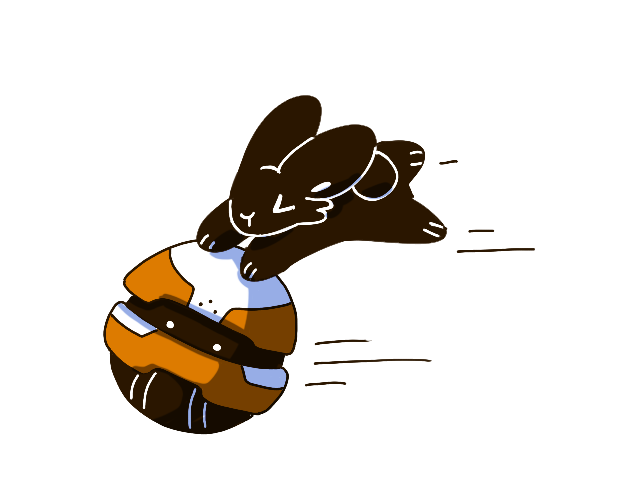

OUR PAST EVENTS
--------------
2025-2026

Tech Horizon x Generative AI Club
November 21, 2025
This event centered around the evolution of Artificial Intelligence and Machine Learning as a field.
We learned about the history and origins of AI, prompt engineering, and real-world applications.
After a brief discussion, attendees played trivia and had an opportunity to win prizes!

Tech x Finance
March 19, 2026
For Tech x Finance, attendees were given the opportunity to explore the emerging sector of FinTech,
the use of software and algorithms to deliver financial services faster, cheaper, and more accessible
than traditional banks. This event provided information on digital payment methods, the stock market,
everyday finance, cryptocurrency, and more. Afterwards, attendees experimented with a stock market simulation.

Tech x Architecture
April 9, 2026
For Tech x Architecture, we explored site analysis, smart cities, smart buildings,
neuroarchitecture, self-healing materials, and more. Afterwards, members had the
opportunity to utilize SketchUp, a common software for entering into architectural design.

Tech x Film
April 23, 2026
For Tech Horizons’ last event of the year, attendees learned about the evolution of animation and
technology in film, CGI, and motion capture. Additionally, we brought Professor Daniel Orban from
the Computer Science & Engineering Department. With experience in visualization, rendering, and animation,
he provided a wealth of knowledge to the event.
2024-2025

Tech x Video Games
October 3, 2024
For Tech Horizons’ very first event,
we invited Alx Preston from Heart Machine. Preston is best known as the creator of
Hyper Light Drifter, a game that won iPad Game of the Year in 2019. In addition to a [adjective]
guest speaker, attendees learned about the hardware and software that goes into video game development.

Tech x Biology
November 5, 2024
For Tech x Biology, Tech Horizons
visited the VR Lab in the Health Sciences Education Center (HSEC).
We explored various immersive experiences, ranging from nature documentaries to surgery simulations.
.png)
Tech x Art
November 14, 2024
For Tech x Art, we discussed how User Experience, User Interface, and Graphic Design play a role in website and app development.
Attendees experimented in Figma, a cloud-based design and prototyping tool used to create digital interfaces.
Tech x Music
November 21, 2024
To wrap up the fall semester, Tech Horizons brought out Tech x Music. Attendees learned about algorithms, sound engineering,
and how innovation is reshaping the music industry. This event had unique activities, like exploring GarageBand,
utilizing a Seaboard keyboard, and making an autotuner in Python.
.png)
Tech Horizon x WOCSTEM
March 20, 2025
For Tech Horizons’ first collaboration event, we partnered with
Women of Color in STEM (WOCSTEM) for a panel event. The panel featured two guests,
both industry professionals who navigated changing career paths, imposter syndrome,
and working in the tech industry as women of color.

Tech x Food Science
April 17, 2025
To wrap up Tech Horizons first year, we brought Dr. Johan B. Ubbink, Professor and Head of the Food Science
and Nutrition Department at the University of Minnesota. With expertise in research and development, chemistry,
and food technology, Dr. Ubbink provided attendees with a wealth of experience.